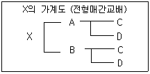
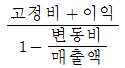
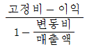
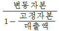
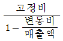
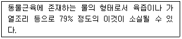

축산기사 (2019-04-27 기출문제)
1과목: 가축육종학
1. 2개의 다른 품종 또는 계통간의 교배에 의해 생산된 1대잡종을 양친의 어느 한쪽 품종이나 계통에 교배시키는 것을 무엇이라 하는가?
- 퇴교배
- 누진교배
- 계통교배
- 근친교배
(정답률: 70%)

2. 염색체의 핵형 분석에서 염색체의 형태가 가장 뚜렷한 시기는?
- 간기
- 전기
- 중기
- 말기
(정답률: 79%)
3. 다음 중 젖소의 형질 중 유전력이 가장 낮은 것은?
- 비유량
- 유지율
- 단백율
- 사료효율
(정답률: 53%)
4. 다음 중 육우 개량에 이용되는 종료 윤환교배의 장점에 대한 설명으로 가장 적절하지 않은 것은?
- 실용축으로 생산되는 송아지에서 100%의 잡종 강세 효과를 이용할 수 있다.
- 축군 대체에 소요되는 비용과 시설을 줄일 수 있다.
- 축군 대체용 종빈우를 생산하기 위하여 순종 교배를 할 필요가 없다.
- 어미 소와 송아지 모두에 있어 25%의 잡종 강세 효과를 이용할 수 있다.
(정답률: 48%)
5. 대규모 양돈장에서 잘 이용되는 교배법으로서 교잡종의 능력이 가장 우수하게 나타나는 교배법은?
- 3품종 종료교배
- 상호역교배
- 2품종 윤환교배
- 종료 윤환교배
(정답률: 80%)
6. 다음 중 서로 다른 품종의 근교 계통 수컷과 근교되지 않은 암컷 간의 교배에서 생산된 잡종은?
- 순종
- 이계교배종
- 계통교배종
- 이품종탑교잡종
(정답률: 66%)
7. 젖소에서 우수 종축을 뽑을 때 보편적으로 이용되는 선발지수법에 대한 설명으로 가장 적절한 것은?
- 두가지 이상의 형질을 선발시 형질간 상관관계를 고려한 선발 방법
- 하나의 형질이 일정한 수준에 도달하면 다음 형질을 선발하는 방법
- 두가지의 형질에 대한 일정수준을 정하고 그 이하의 개체는 도태시키는 방법
- 두가지의 형질 중 선발반응이 우수한 형질을 뽑는 방법
(정답률: 54%)
8. 랜드레이스종과 버크셔종 돼지를 교배할 때 F2에서 백색 개체가 나타나는 비율은?
- 1/4
- 2/4
- 3/4
- 4/4
(정답률: 70%)
9. 다음 중 돼지의 선발 시 고려사항으로 가장 적절하지 않은 것은?
- 암퇘지보다는 수퇘지를 선발함으로써 개량의 효과를 더욱 높일 수 있다.
- 암퇘지에 비해 수퇘지의 종돈 소요두수가 적으므로 선발강도를 낮추어야 한다.
- 선발된 암퇘지는 번식적령기에 도달시 수태성적 등에 근거하여 일부 불량 개체는 도태한다.
- 능력이 우수한 경우라도 사지와 발굽의 상태가 불량하면 도태하는 것이 바람직하다.
(정답률: 78%)
10. 쇼트혼(Shorthorn)품종 중에서 조모색(槽毛色)끼리 교배 시킬 경우 표현형의 분리비는?
- 적색 3 : 백색 1
- 백색 3 : 적색 1
- 적색 1 : 조모색 2 : 백색 1
- 모두 조모색
(정답률: 80%)
11. 전형매 간 교배를 3대에 걸쳐 실시하는 경우의 근교계수는?
- 25.0%
- 37.5%
- 50.0%
- 59.4%
(정답률: 37%)
12. 어미소와 딸소의 유량을 조사하여 어미소 유량에 관한 딸소 유량의 회귀, 즉 모낭간 회귀를 구한 결과 그 회귀계수(b)가 0.125 였다면 이 결과로 추정할 때 유전력은?
- 0.125
- 0.250
- 0.375
- 0.500
(정답률: 79%)
13. 다음 가계도와 같은 전형매가교배에서의 X의 근교계수는?

- 12.5%
- 25.0%
- 37.5%
- 50.0%
(정답률: 68%)
14. 다음 중 젖소의 산유기록의 통계적 보정에 대한 설명으로 가장 적절하지 않은 것으?
- 유우의 산유기록은 일반적으로 3⑤일 산유기록으로 환산한다.
- 암소의 연령에 따른 산유량의 차이를 보정하기 위해 성년형으로 보정한다.
- 1일 착유횟수에 따른 사유량 차이를 보정하기 위해 4회 착유 비유기록으로 보정한다.
- 유지율이 다른 산유기록을 비교하기 위해 유지보정 유량을 계산한다.
(정답률: 64%)
15. 원형질과 함께 완전한 생활기능을 발휘하고 진화에 응하는 최소한도의 염새체 수의 1벌을 의미하는 것은?
- DNA
- RNA
- Polydactyl
- Genome
(정답률: 67%)
16. 돼지에서 2품종 또는 3품종 윤환교배를 실시하여 종빈돈을 생산하고 이때 생산된 종빈돈을 제3품종의 수퇘지 또는 제4품종의 수퇘지에 교배시켜 교잡종의 비육도을 생산하는 교배방법은?
- 종료윤환교배
- 3품종교배
- 퇴교배
- 상호역교배
(정답률: 65%)
17. 다음 중 넓은 의미의 순종교배에 속하지 않는 것은?
- 무작위교배
- 근친교배
- 동일품종내의 이계교배
- 종간교배
(정답률: 50%)
18. 양적형질에서 유전과 환경의 두 요인에 의해서 나타나는 개체간 또는 집단간의 능력 차이를 무엇이라고 하는가?
- 변성
- 변이
- 변종
- 변형
(정답률: 83%)
19. 산란계의 경제형질 중 유전력이 가장 낮은 형질은?
- 성계성체중
- 난중
- 초산일령
- 부화율
(정답률: 52%)
20. 육계의 생산을 위한 어미 닭 선발에 있어 고려해야할 사항이 아닌 것은?
- 산란수
- 수정율
- 부화율
- 난중
(정답률: 66%)
2과목: 가축번식생리학
21. 다음 중 수란우의 선정조건으로 가장 적절하지 않은 것은?
- 우수한 유전형질을 보유하고 있는 소
- 적절한 영양상태를 유지하고 있는 소
- 건강한 생식기를 보유하고 있는 소
- 질병 및 대사장애가 없는 건강한 소
(정답률: 60%)
22. 웅성 호르몬(Androgen)의 기능으로 가장 적절하지 않은 것은?
- 정자형성 촉진
- 세포막 변화
- 웅성생식기 분화
- 제2차 성징 발현
(정답률: 69%)
23. 다음 중 분만을 인위적으로 유도하는데 사용하는 호르몬으로 가장 옳은 것은?
- 프로스타글란딘(PGF2α)
- 임마혈청성 성선자극호르몬(PMSG)
- 임부융모성 성선자극호르몬(hCG)
- 황체형성호르몬(LH)
(정답률: 68%)
24. 성호르몬의 생산부위로 가장 적절하지 않은 것은?
- 소장
- 뇌하수체 전엽
- 생식선
- 시상하부
(정답률: 76%)
25. 가축정액을 장기간 보존하기 위해서 동결정액제조 시 동해로부터 정자를 보호하기 위해 일반적으로 첨가하는 동해방지제는?
- 구연사
- 비타민 A
- 젤라틴
- 글리세롤
(정답률: 72%)
26. 다음 중 임신기간이 약 114일인 동물로 가장 적절한 것은?
- 젖소
- 말
- 돼지
- 양
(정답률: 78%)
27. 다음 중 수정 후 착상까지의 기간이 가장 긴 가축은?
- 산양
- 면양
- 돼지
- 소
(정답률: 58%)
28. 다음 중 젖소에서 배란이 일어나는 시기로 가장 옳은 것은?
- 발정개시 전 4~5시간
- 발정종료 전 4~5시간
- 발정종료 후 10~12시간
- 발정종료 후 24시간
(정답률: 75%)
29. 다음 중 소의 분만 과정을 단계별로 가장 바르게 나타낸 것은?
- 진통기 → 산출기 → 태아만출기
- 준비기 → 태아만출기 → 진통기
- 진통기 → 만출기 → 후산기
- 준비기 → 후산기 → 만출기
(정답률: 65%)
30. 교미자극에 의해서 배란하는 동물로만 나열된 것은?
- 토끼, 산양
- 토끼, 밍크
- 밍크, 면양
- 소, 돼지
(정답률: 73%)
31. 소에서 분만시 막이 파열되고 액체가 파수현상이 두 번 일어나는데 각각 파열되는 막은 무엇인가?
- 제1파수 – 요막, 제2파수 - 양막
- 제1파수 – 양막, 제2파수 - 요막
- 제1파수 – 융모막, 제2파수 - 요막
- 제1파수 – 요막, 제2파수 – 융모막
(정답률: 62%)
32. 뇌하수체 후엽 호르몬으로 가장 적절한 것은?
- 티록신
- 에스트로겐
- 옥시토신
- 프로락틴
(정답률: 76%)
33. 난소에서 난포를 완전히 발육시켜 배란이 일어나는 데 까지 필요한 호르몬으로만 나열된 것은?
- Progesterone, LH
- FSH, LH
- Progesterone, FSH
- Estrogen, Prolactin
(정답률: 65%)
34. 일조시간이 짧아지는 계절에 번식이 시작되는 동물은?
- 소
- 말
- 돼지
- 면양
(정답률: 72%)
35. 말과 돼지에서 볼 수 있는 태반의 형태로 가장 적절한 것은?
- 궁부성 태반
- 대상 태반
- 산재성 태반
- 반상 태반
(정답률: 69%)
36. 가축의 번식 적령기에 대한 내용으로 가장 적절하지 않은 것은?
- 번식적령기를 결정하는 요인 중 월령과 체중이 가장 중요하다.
- 교배적령기 이전에 번식하여도 수태율 및 산자수에는 영향이 없다.
- 젖소의 번식적령기는 생후 13~15개월령 전후이다.
- 돼지(렌드레이스)의 번식적령기는 생후 8개월령 이후이다.
(정답률: 77%)
37. 발정주기 단계에서 발정기에 배란이 되지 않는 동물은?
- 면양
- 돼지
- 소
- 생쥐
(정답률: 56%)
38. 다음 중 소의 난자가 배란 후 정자와 수정할 수 있는 수정 능력 보유 시간으로 가장 적절한 것은?
- 6~8시가
- 8~10시간
- 20~24시간
- 30~40시간
(정답률: 66%)
39. 다음 중 정자의 수정능 획득에 대한 설명으로 가장 옳은 것은?
- 정자는 형성과 동시에 수정능을 획득하게 된다.
- 정자는 정자변형과 동시에 수정능을 획득하게 된다.
- 정자는 난자와 수정하기 전에 암컷의 생식기도관을 통과하며서 수정능을 획득한다.
- 정자는 사출과 동시에 수정능을 획득한다.
(정답률: 74%)
40. 릴렉신에 대하 설명으로 가장 적절하지 않은 것은?
- 난포호르몬과 협동하여 유선발육을 촉진시킨다.
- 치골 결합을 분리시켜 태아가 용이하게 골반을 통과 하도록 한다.
- 기능을 발휘하기 위해서는 난포호르몬의 선행작용이 있어야 한다.
- 난소에서 분비되는 호르몬으로 스테로이드 호르몬이다.
(정답률: 58%)
3과목: 가축사양학
41. 영년생 화본과 목초가 아닌 것은?
- 이탈리안라이그라스
- 오차드그라스
- 티모시
- 톨페스큐
(정답률: 55%)
42. 영양소의 활성흡수(active transport)작용에 해당되는 것은?
- 농도가 높은 곳에서 낮은 곳으로 이동
- 수소펌프의 작용에 의한 이동
- 포도당이나 L-아미노산의 흡수
- 중간매개물(carrier)의 필요없이 직접 흡수
(정답률: 55%)
43. 사일리지의 질을 향상시키는 첨가제가 아닌 것은?
- 소금
- 당밀
- 요소
- 실리카
(정답률: 58%)
44. 소의 생체 중에서 가장 늦게 성장하는 부위는?
- 머리
- 목
- 가슴
- 허리
(정답률: 64%)
45. 면실박의 사료적 가치를 설명한 것으로 틀린 것은?
- 단백질 함량이 약 35% 정도이다.
- 면실박에는 고시폴이라는 성분이 있다.
- 닭사료에는 사용량의 제한이 없다.
- 소사료에 면실박은 타가축사료보다 안전하다.
(정답률: 77%)
46. 돼지는 뼈, 근육, 지방의 발육과정이 품종 간에 차이가 있으며 이를 베이컨형과 라드형으로 구분할 때 틀리게 연결된 것은?
- 라드형 - 듀록종
- 베이컨형 – 대 요크셔종
- 라드형 - 랜드레이스종
- 라드형 – 버크셔종
(정답률: 58%)
47. 고능력 젖소에 있어서 건유기 사양관리의 중요성으로 틀린 것은?
- 비유기관의 활성유지
- 임신중인 태아의 성장
- 비유기 모체 영양손실의 회복
- 다음 착유기간을 위한 영양축적
(정답률: 61%)
48. 일반적인 사양조건에서 자돈이 빈혈에 걸리기 쉬운 이유는 어미젖 중에 특히 어느 미량 광물질이 부족하기 때문인가?
- 철분(Fe)
- 요오드(I)
- 아연(Zn)
- 셀레늄(Se)
(정답률: 83%)
49. 강피류가 아닌 것은?
- 소맥피
- 대두피
- 쌀겨
- 옥수수글루텐
(정답률: 79%)
50. 채종박에 들어 있는 유해물질은?
- 리나마린(Linamarin)
- 고시폴(Gossypol)
- 글루코시놀레이츠(Glucosinolates)
- 마이로시네이즈(Myrosinase)
(정답률: 56%)
51. 사료의 에너지 평가법과 관계가 없는 것은?
- 가소화총영양소(TDN)
- 대사에너지(ME)
- 전분가(SV)
- 생물가(BV)
(정답률: 53%)
52. 제과제빵부산물을 이용하여 한육우의 섬유질배합사료를 제조할 때 과다함유로 인해 설사발생이 우려되는 성분으로만 나열된 것은?
- 비타민, 단백질
- 단백질, 소금
- 소금, 지방
- 지방, 비타민
(정답률: 63%)
53. 사료 내 단백질의 영양적 특성을 결정짓는 것은?
- 아미노산 조성
- 각 비타민 함량
- 각 미네랄 함량
- 지방산 조성
(정답률: 77%)
54. 돼지사양에 있어 포유자돈의 3대 사양원칙은?
- 온난, 건조, 청결
- 철분, 단백질, 탄수화물
- Ca과 P, Fe과 Cu, Vitamin
- Choline, Carotene, Niacin
(정답률: 68%)
55. 사료를 가공 처리하는 이유로 틀린 것은?
- 사료의 표면적을 넓게 함으로써 미생물 또는 소화효소의 작용 면적을 넓게 한다.
- 농후사료는 밀도를 증가시켜 부피감을 줌으로써 소화율을 향상한다.
- 사료효율을 증진시킨다.
- 사료 기호성을 개선한다.
(정답률: 72%)
56. 광물질의 상호작용 관계에 대한 설명으로 틀린 것은?
- 칼슘(Ca)의 과다공급은 아연(Zn) 및 망간(Mn)의 흡수를 방해한다.
- 마그네슘(Mg)의 지나친 공급은 인(P)의 이용률을 저하시켜 구루병을 유발할 수 있다.
- 미량의 비소(As)는 셀레늄(Se)의 중독을 완화시키는 능력이 있다.
- 몰리브덴(Mo)과 구리(Cu)는 서로 길항작용 관계를 가진다.
(정답률: 46%)
57. 가축의 체유지와 생산에 필요한 에너지인 ATP의 생합성에 대한 설명으로 틀린 것은?
- 영양소의 산화 시 유리에너지를 운반하는 분자이다.
- ADP에 무기인(Pi)이 결합하여 생긴 고에너지 결합이다.
- ATP의 말단인산기가 가수분해 시 7.3kcal의 에너지가 생산된다.
- ATP의 말단인산기의 가수분해 시 에너지가 유리되지 않는다.
(정답률: 72%)
58. 단백질의 소화와 관련이 없는 효소는?
- 펩신
- 트립신
- 키모트립신
- 아밀라아제
(정답률: 78%)
59. 가축의 사료 섭취량을 조절하는 기구 중 혈당설에 대한 설명으로 옳은 것은?
- 사료 섭취량이 증가하면 혈당함량이 증가하며 정신적 흥분을 일으켜 섭취량이 줄게 된다.
- 사료 섭취에 따른 위의 확장은 섭식중추를 자극하여 혈당이 증가한다.
- 사료 섭취로 혈당이 높아지면 포만중추를 자극하여 섭식을 중단시키게 된다.
- 사료 섭취로 체열이 발생하며 인슐린 분비량이 증가한다.
(정답률: 61%)
60. 수분 70%인 생고구마인 조단백질 함량이 2.0%이면, 이 생고구마의 수분을 10%로 건조시켰을 때의 조단백질 함량은?
- 5.5%
- 6.0%
- 6.5%
- 7.0%
(정답률: 54%)
4과목: 사료작물학 및 초지학
61. 일반적으로 오차드그라스를 채초용으로 단파할 때 ha당 가장 적절한 파종량은?
- 5~10kg 정도
- 17~25kg 정도
- 35~40kg 정도
- 45~50kg 정도
(정답률: 55%)
62. 다음 중 지하경을 갖는 목초는?
- 티모시
- 켄터키블루그라스
- 오차드그라스
- 화이트클로버
(정답률: 46%)
63. 화본과 목초의 2번초의 예취 적기에 대한 기준으로 가장 거리가 먼 것은?
- 절간 신장이 이루어지는 경우의 예취 적기는 1번초와 동일한 시기라고 할 수 있다.
- 영양생장기의 경우는 초고가 40~50cm 일 때가 예취적기라고 할 수 있다.
- 1번초 예취 후 60~80일 후가 적당하다.
- 우리나라 기후조건에서는 1번초 예취시기에 따라 연간 3~4회 예취가 가능하다.
(정답률: 33%)
64. 다음 중 귀리에 대한 설명으로 가장 옳은 것은?
- 추위에 강하며 우리나라 전역에서 월동이 가능하다.
- 출수 후에는 호밀보다 사료가치가 급격히 떨어진다.
- 봄, 가을 단경기 사료작물로 적합하다.
- 뿌리가 얕아 수확 후 경운이 쉽다.
(정답률: 57%)
65. 옥수수의 10m2당 생산량이 생초 25kg이고 사일리지 제조 손실량이 20%라고 가정할 때, 젖소 성우 10두를 200일간 하루 한 마리에 20kg씩의 옥수수 사일리지를 급여하고자 한다면 옥수수의 재배면적(m2)은 약 얼마 정도 필요한가?
- 200 m2
- 2000 m2
- 20000 m2
- 40000 m2
(정답률: 54%)
66. 다음 중 토양 산도 교정을 목적으로 사용하는 재료로 가장 적절한 것은?
- 요소
- 인산
- 칼리
- 석회
(정답률: 75%)
67. 청예용 옥수수의 생산량을 높이기 위하여 가장 많이 필요로 하는 영양소는?
- 칼슘
- 인산
- 칼륨
- 질소
(정답률: 61%)
68. 작부조합을 만들 때 고려해야 할 사항으로 가장 옳지 않은 것은?
- 품질보다는 양적으로 많은 사료작물
- 단위면적당 건물의 수량이 높은 사료작물
- 생산과 이용작업이 쉬운 사료작물
- 생산비용이 적게 드는 사료작물
(정답률: 74%)
69. 옥수수사일리지를 제조하려고 하는데 재료의 수분이 너무 많을 경우 수분 조절방안으로 가장 적절한 것은?
- 벤 직후 바로 사일로에 충전한다.
- 재료의 절단길이를 짧게 한다.
- 재료 충전시 밀기울을 섞는다.
- 요소를 첨가한다.
(정답률: 68%)
70. 오차드그라스 초지에 질소를 시비하려 할 때 가장 바람직하지 못한 시기는?
- 예취 직후
- 파종시기
- 월동 후
- 하고직전
(정답률: 60%)
71. 레드클로버에 함유되어 있는 특징적인 물질은?
- 에스트로겐
- 쿠마린
- 청산
- 질산염
(정답률: 43%)
72. 1년생 사료작물인 수단그라스계 잡종을 건초로 조제할 때 주의사항으로 가장 거리가 먼 것은?
- 수확 적기는 황숙기이다.
- 모어컨디셔너 등을 이용하여 건조효율을 높인다.
- 다엽성 품종인 hay sudangrass는 초장 150~160cm 정도에서 건초로 조제한다.
- 비로 인하여 수분함량이 높은 건초는 프로피온산, 암모늄 처리를 하는 것이 좋다.
(정답률: 44%)
73. 불경운 초지조성 시 선점식생을 제거하는 방법으로 가장 거리가 먼 것은?
- 강방목
- 제초제
- 인력에 의한 식생 제거
- 시비
(정답률: 59%)
74. 사료작물을 3회 이상 예취하여 생초로 이용하는 것이 유리 한데 여름철 고온기하고현상을 예방하기 위한 오차드그라스의 예취 높이로 가장 적절한 것은?(오류 신고가 접수된 문제입니다. 반드시 정답과 해설을 확인하시기 바랍니다.)
- 2 ~ 5cm
- 6 ~ 8cm
- 9 ~ 13cm
- 19 ~ 24cm
(정답률: 44%)
75. 다음 중 저수분 사일리지의 가장 적절한 수분함량은?
- 20 ~ 30%
- 40 ~ 60%
- 70 ~ 80%
- 80 ~ 100%
(정답률: 65%)
76. 목초에 가장 가까운 생육 특성을 가지고 있으며, 잎이 많고 커서 가축의 기호성이 높은 사료작물은?
- 옥수수
- 수수류
- 호밀
- 귀리
(정답률: 39%)
77. 수단그라스계 잡종의 청예 이용에 대한 설명으로 가장 적절하지 않은 것은?
- 초장이 너무 낮을 때 예취하여 급여하면 청산중독의 위험이 있다.
- 너무 낮게 수확하면 재생이 늦어지고 죽어 없어지는 개체가 발생하므로 5cm 이하로 예취하지 않는 것이 좋다.
- 어릴 때 수확하여 건초로 만들면 청산중독 위험이 증가된다.
- 자주 예취가 가능한 조·중생종에 비하여 대가 굵고 키가 크게 자라는 만숙종은 출수되는 것을 보지 못할 때도 있다.
(정답률: 41%)
78. 잎이 떨어지기 쉬운 두과목초는 어떤 방법으로 건초를 제조하는 것이 영양분의 손실이 가장 적은가?
- 양건법
- 화력 건조법
- 음건법
- 발효 건조법
(정답률: 59%)
79. 다음 중 건초에 대한 일반적인 설명으로 가장 거리가 먼 것은?
- 건초의 수분 함량은 15% 이하여야 한다.
- 작물의 특성과 이용목적에 따라 건초를 제조한다.
- 우리나라에서 건초보다 사일리지를 많이 하는 것이 비가 자주 오는 기후의 영향도 크다.
- 건초 제조시 작물의 수확시기는 숙기가 진행될수록 수분함량이 낮고, 영양분은 높아지므로 늦게 할수록 좋다.
(정답률: 77%)
80. 다음 중 가을철 초지 조성 시 초기에 진압을 하면 나타나는 효과로 가장 적절한 것은?
- 병충해 방제
- 서릿발과 동해의 방지
- 목초의 경합력을 증진시킴
- 초종의 구성을 조절시킴
(정답률: 53%)
5과목: 축산경영학 및 축산물가공학
81. 축산업의 상업화가 초래한 현상으로 가장 거리가 먼 것은?
- 축산업의 시장 규모가 상대적으로 축소된다.
- 축산경영에서 유통의 역할이 증대된다.
- 축산농가 사이에 대농가와 그렇지 못한 농가 사이의 양극화가 나타난다.
- 축산경영 목적으로 수익 극대화의 특성이 더 강화된다.
(정답률: 74%)
82. 축산경영자의 역할은 경제적 기능과 기술적 기능으로 나뉜다. 다음 중 경제적 기능으로 가장 거리가 먼 것은?
- 가축의 생산순서와 생산규모를 결정한다.
- 가축의 종류를 선택하고 결정한다.
- 경영에 채용할 생산기술를 결정한다.
- 경영성과를 분석하고 경영계획을 세운다.
(정답률: 61%)
83. 축산경영 공동조직의 운영원칙으로 가장 적절하지 않은 것은?
- 경쟁의 원칙
- 인화의 원칙
- 공평의 원칙
- 민주화의 원칙
(정답률: 63%)
84. 축산물 유통경로의 길이가 짧게 형성되는 경우에 나타나는 상품 및 수요 측면에서의 특성으로 가장 거리가 먼 것은?
- 고객이 지연적으로 넓게 분산되어 있다.
- 구매빈도가 낮고 비규칙적인 수요 특성이 있다.
- 부패성이 큰 상품특성을 가지고 있다.
- 기술적으로 복잡한 상품특성을 가지고 있다.
(정답률: 49%)
85. 축산농가를 위한 경영진단을 할 때 그 순서를 가장 올바르게 나열한 것은?
- 문제의 발견 → 문제의 분석 → 경영실태의 파악 → 대책 수립과 처방
- 경영실태의 파악 → 문제의 발견 → 문제의 분석 → 대책 수립과 처방
- 문제의 발견 → 경영실태의 파악 → 문제의 분석 → 대책 수립과 처방
- 문제의 분석 → 문제의 발견 → 대책 수립 → 처방 및 설계
(정답률: 57%)
86. 가축자본재 중 유동자본재에 해당하는 것은?
- 젖소 경산우
- 한우 번식우
- 한우 비육우
- 산란계
(정답률: 72%)
87. 손익분기점 계산법은?




(정답률: 58%)
88. 육계농가의 경영성과를 평가하기 위한 지표로 가장 적절하지 않은 것은?
- 사료요구율
- 유사비
- 육성률
- 일당 증체량
(정답률: 67%)
89. 가족 노동비나 자가 토지에 대한 지대 등과 같이 현금지출 비용이 아닌 비목도 생산비에 포함되는데, 이들 비목을 생산비에 포함시키는 것은 비용의 어떤 개념 때문인가?
- 명시비용
- 평균비용
- 기회비용
- 한계비용
(정답률: 57%)
90. 일반적으로 브랜드는 유통과정에서 다양한 기능을 수행한다. 축산물 브랜드가 수행하는 일반적인 기능으로 가장 거리가 먼 것은?
- 상징기능
- 광고기능
- 재산보호기능
- 모방기능
(정답률: 73%)
91. 우유의 단백질 중 카제인의 등전점은?
- pH 4.0
- pH 4.6
- pH 5.2
- pH 5.6
(정답률: 63%)
92. 원료육을 염지, 수세한 후 저온에서 장기간 훈연 또는 숙성·건조 처리한 것으로 가열처리를 하지 않는 햄은?
- 생햄
- 본레스햄
- 로인햄
- 프레스햄
(정답률: 64%)
93. 근육의 사후경직과 관련된 설명으로 틀린 것은?
- 동물의 사후 골격근이 굳어지고 신전성이 없어지는 현상이다.
- 근육 내 ATP가 완전 소실되면 액틴과 미오신이 결합하여 액토미오신을 형성한다.
- 경직이 해소될 때 근육 내에서는 ATP의 분해, 근육 pH의 상승, 단백질의 응집 등 생화학적 변화가 일어난다.
- 사후경직 시간은 동물의 종류에 따라 차이가 있다.
(정답률: 50%)
94. 시유에서 균질처리공정의 목적과 거리가 먼 것은?
- 지방구를 미세화시킨다.
- 지방의 분리를 방지한다.
- 미생물 사멸 및 효소를 파괴한다.
- 단백질의 소화율이 다소 향상된다.
(정답률: 59%)
95. 아래 설명에 해당하는 용어는?

- 근소포체
- 고정수
- 자유수
- 결합수
(정답률: 53%)
96. 경질치즈 제조 시 부패균 오염이 되면 치즈 조직 내부에서 기체가 발생하여 과다한 기포를 형성하거나 심하면 표피의 균열이 생기는 현상은?
- 팽화(blowing)
- 우모화(feathering)
- 농후화(age thickening)
- 거품화(whipping)
(정답률: 51%)
97. 원료로써 돈두육, 돈심장 등을 이용하여 조직 중의 함유된 젤라틴의 작용으로 고형화 한 것은?
- 텅 소시지
- 헤드 치즈
- 블러드 소시지
- 리버 소시지
(정답률: 52%)
98. 근원섬유의 3번째 필라멘트로서 M-선에서부터 양쪽의 Z-선까지 세로방향으로 뻗어있는 단백질은?
- 트로포마이오시
- 트로포닌
- 타이틴
- C-단백질
(정답률: 32%)
99. 돼지고기의 육색이 창백하고, 육조직이 무르고 연약하며, 육즙이 다량으로 삼출되어 이상육으로 분류되는 돈육은?
- 황지(黃脂)돈육
- 연지(軟指)돈육
- PSE 돈육
- DFD 돈육
(정답률: 72%)
100. 15℃ 온도에서 시유의 일반적인 비중 범위는?
- 0.028 ~ 0.034
- 0.182 ~ 0.234
- 1.028 ~ 1.034
- 2.128 ~ 2.134
(정답률: 66%)